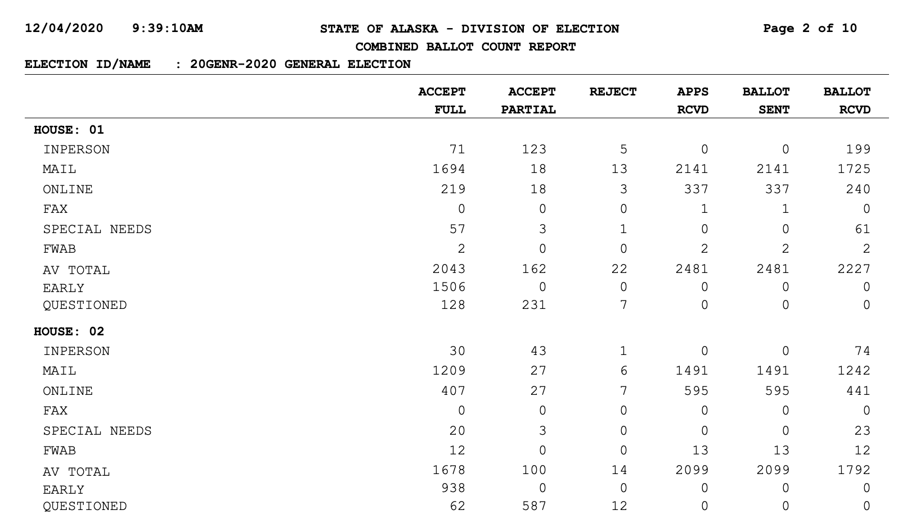
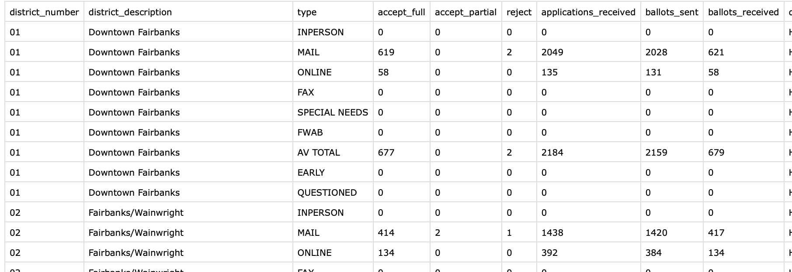
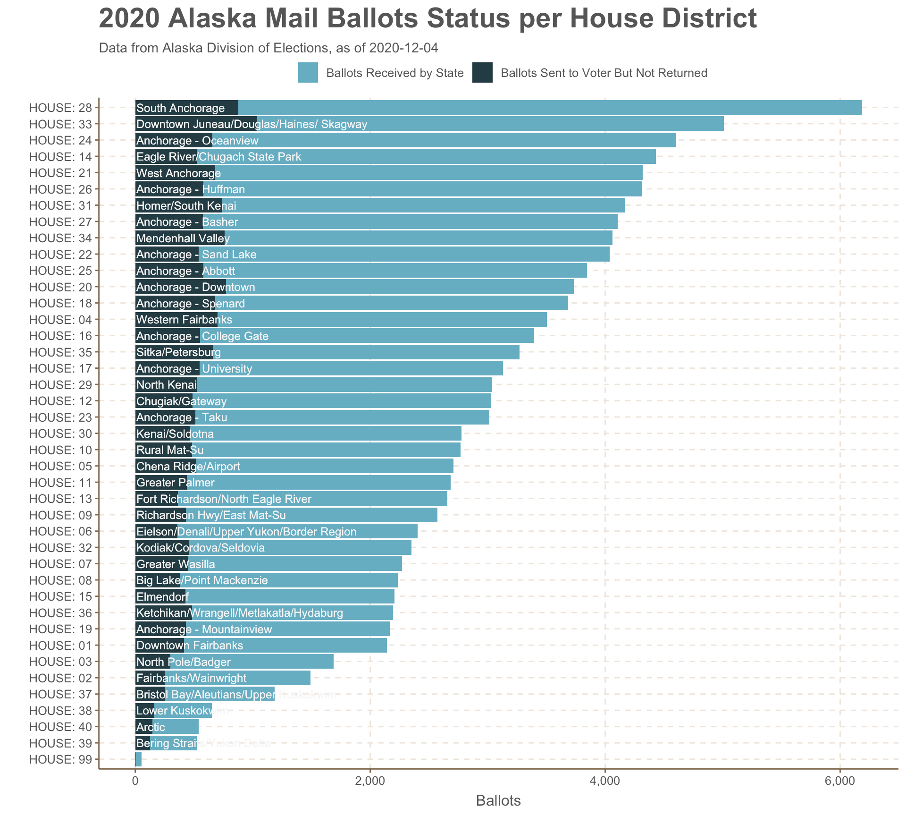
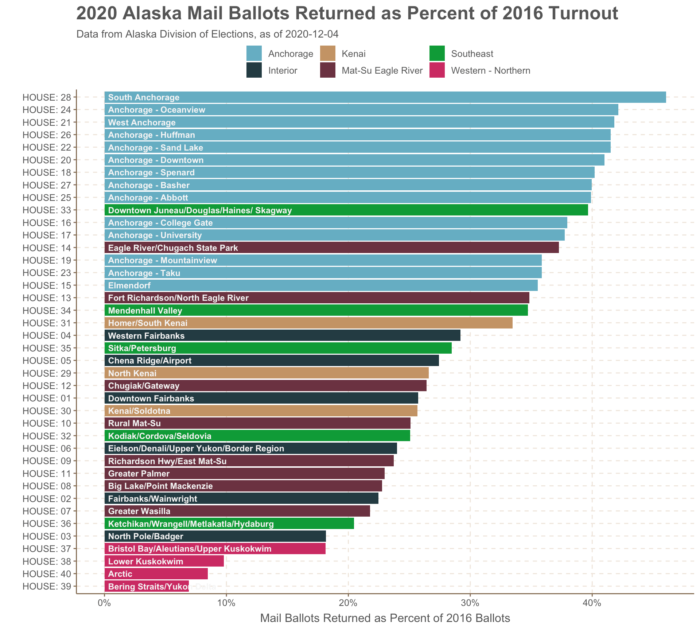
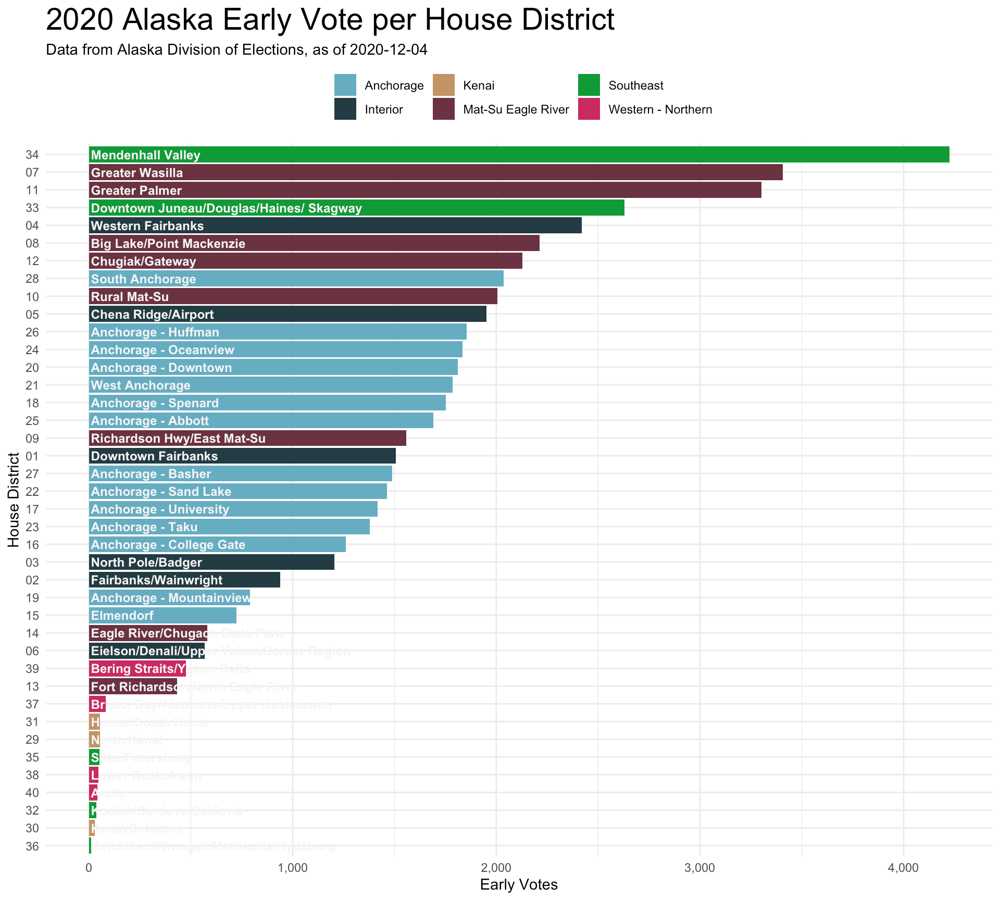
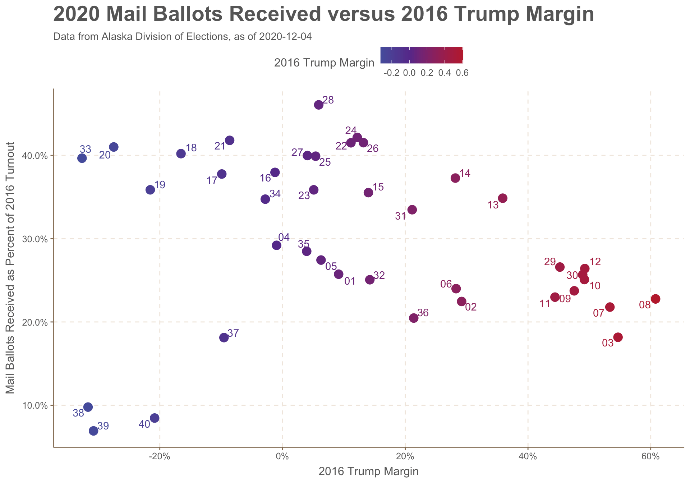
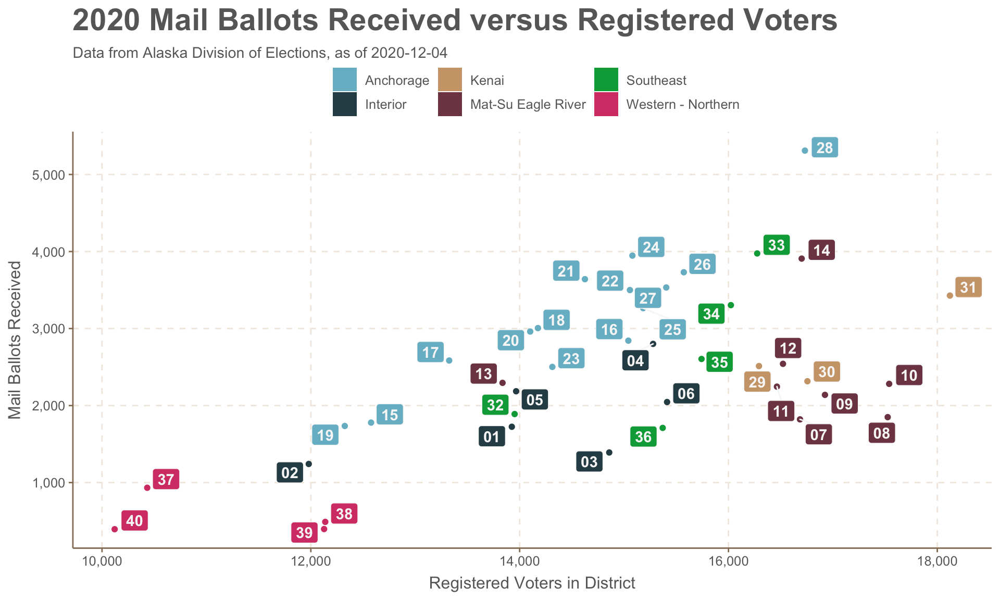
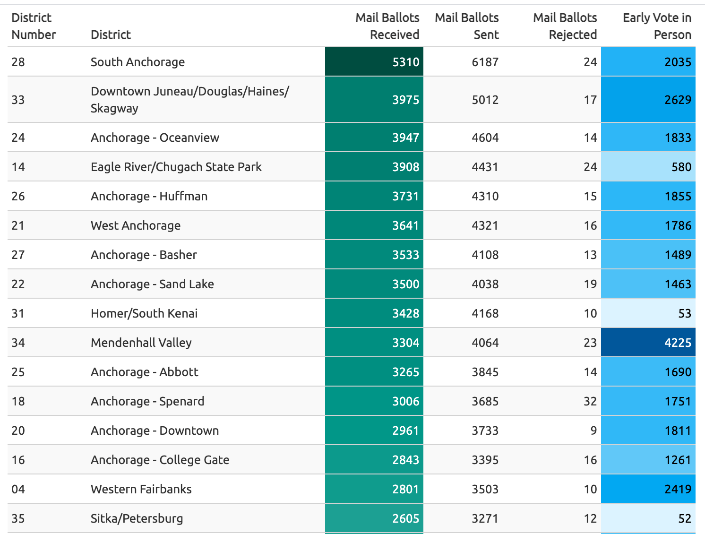

Alaska 2020 Early Vote Tracker - Rmarkdown report
**TL:DR, I made an rmarkdown site tracking Alaska’s early and mail vote as ballots arrived each day in October/November 2020.
Alaskans voted by mail in record numbers during the 2020/pandemic general election. In mid-October after I mailed in my ballot, I started poking around the Alaska Division of Elections website to see if they had any reports on the incoming ballots. I found a daily updated PDF of mail votes, early votes, rejected ballots, and the ballots outstanding.

Though it’s in a PDF, this was the data I was looking for. While the Division of Elections emails out a full updated voter file quite frequently that’s very granular and tracks things like party registration, I wanted to use a dataset that was machine-readable on the web. And the resolution down to actual voters was a little too much for what I wanted to track, which was:
What areas of the state are most enthusiastically particpating in vote-by-mail? Which are not taking part? What areas are seeing the most rejected ballots?
This Alaska House District-level data is locked in the PDF above, but it seemed organized and consistent. I wanted to see if I could break this data out of the PDF and show it how I wanted to see it. Like all of my side projects, it’s made for an audeince of one: me. If anyone else enjoys it, that’s a bonus.
My go-to tool for parsing PDFs is Tabula. It’s what parses the 208-page pdf for my [pfdBot twitterbot] (http://twitter.com/pfdbot). Thus I hoped to use the R package Tabulizer and have all of this run in an rscript or rmarkdown report. For the life of me, I could not get its rJava dependency installed on my laptop. I went deep, deep, deep into StackOverflow topics from 10 years ago. I installed many version of Java. I signed up for the Oracle newsletter I think. Many hours went into attempting that.
My workaround was to use the Tabula-py python library for the PDF parsing, and R for the rest. I had one python script that would download the PDF from the Divison of Elections, compare it’s update date to the latest date I had saved in a file, and if it was new, then it would use a tabula function to parse and spit out a CSV.
url = "https://www.elections.alaska.gov/results/20GENR/data/sovc/CombinedBallotCountReport_Server.pdf"
tabula.convert_into(url, "output_current.csv", output_format="csv", pages='all')
With some projects, the hard parts are easy and the easy parts are hard. This is one of those projects. After running the PDF through tabula-py, I got something that looked like this:

Much better. That one line of python is fantastic. After a bunch of reshaping and adding in new fields like percentages in R with dyplyr, I had the base data for the rmarkdown report. It was not a pretty system but it worked for the three or four weeks that this was running.
I had been using Rmarkdown to run a handful of reports with COVID-19 information at work, and this seemed like a really nice fit for rmarkdown reports. Load in new data each day, run it, and push to the web.
This is the final product.
The ggplot thoroughout was pretty basic, though getting the details right is the time-consuming part. I wanted to show all 40 districts at once, so it’s a bit dense, but this is what I wanted.

Alaska’s 40 House districts cover all the diversity of the state..from the ferry-connected towns in Southeast to the exurban Mat-Su and all the I wanted to add one level of geographic categorization. It’s not intuitive to know that HD33 represents downtown Juneau while HD32 covers Kodiak. So I made up six regional designations, show in the colors of the bars below. These are made up out of thin air.

I wanted to show how different the voting landscape was across the state. Vote by mail was far less utilized in rural parts of the state in the west and north compared to urban Anchorage districts. Less than 10% of the 2016-level turnout voted by mail in the west and north, while you see in that mass of light blue bars that nine Anchorage districts were at ~40%.
I was at a couple points really close to making a map to show the regional trends, but I decided against it. The world has enough election maps.
The in-person early vote also saw a huge particpation this year. But it was the Juneau Mendenhall Valley (the “conservative” part of Juneau - shown in green) as well as the Mat-Su districts (shown in red-purple) that really outperfomred with early in-person.

I brought in some historical data to make the raw numbers a bit more meaningful. I grabbed 2016 vote turnout numbers as well as the Trump-Clinton margin for a partisan measurement. Would redder parts of Alaska follow the national trend and skip the mail voting? (the answer: yes, but with the big exception of HD-38,HD-39, and HD-40 the bush districts).

The couple of scatter plots comparing voter registration and vote-by-mail aren’t exactly thrilling, but it was useful for day-to-day on-the-fly exploratory data analysis. You can see the same regional trends pop out, though labelling is hard. I wanted to include all 40 labels. If I was doing something for a real presentation, I’d be a lot more selective on what’s labelled and how.

I had a lot of fun making a table using the gt pacakge. I’d like to do a lot more with it.

This looked something like this:
gt(votes_mail_early %>% select (district_number, district_description, ballots_received, ballots_sent, reject, accept_full) %>% arrange(desc(ballots_received))) %>%
data_color(
columns = vars(ballots_received),
colors = scales::col_numeric(
palette = paletteer::paletteer_d(
palette = "ggsci::teal_material"
) %>% as.character(),
domain = NULL
)) %>%
data_color(
columns = vars(accept_full),
colors = scales::col_numeric(
palette = paletteer::paletteer_d(
palette = "ggsci::light_blue_material"
) %>% as.character(),
domain = NULL
)) %>%
cols_label(
district_number = "District Number",
district_description = "District",
ballots_received= "Mail Ballots Received",
ballots_sent = "Mail Ballots Sent",
reject = "Mail Ballots Rejected",
accept_full = "Early Vote in Person"
) %>% opt_row_striping() %>% tab_style( cell_text(weight = "bold"), locations = cells_column_labels(columns = vars(district_number, district_description, ballots_received, ballots_sent, reject, accept_full)))
I had the R script do a few system calls to push the data up to a github repository as well as commit the output html to the web. Not sure if I recommend this.
system_call <- paste0(
"git add early_vote_md.html " , "data/output/",report_date,"_","alaska_early_vote.csv
git commit -m \"update \"
git push origin master"
)
system(system_call)
You can check out the full website.